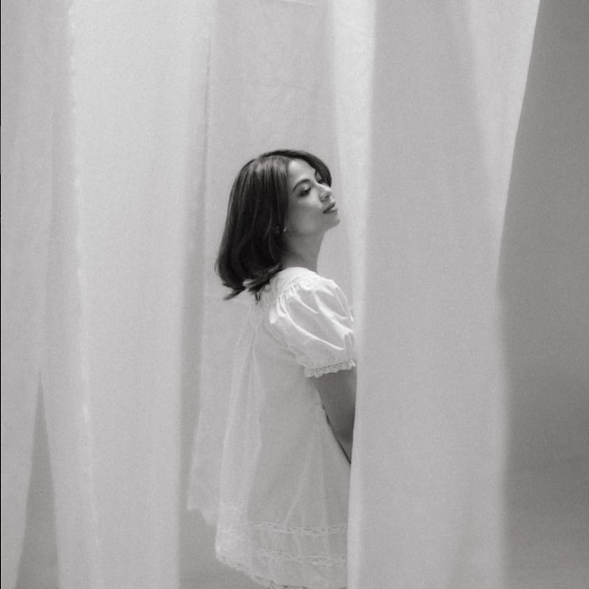

Personal Portfolio / 2026
Stories I keep
close.
Hi, Welcome to my little space on the web! ♡
Here, you’ll get a glimpse of me through the years — from childhood memories
and old photos to the things I enjoy, the moments I treasure, and the person I’m becoming today.
It’s basically a small collection of my life, interests, and everything in between.

A little about me
Curious by nature.
Grounded by the people I love.
I enjoy finding meaning in ordinary details: a great chorus, a beautifully made scene,
or a quiet afternoon worth remembering. These pages are my personal top fives.
Sounds on repeat
Five songs that always find their way back.

01↗
Scenes that stay
Five movies for five different moods.

02↗
Frames of life
Ten snapshots of what feels like me.

03↗